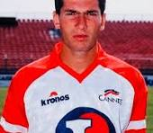
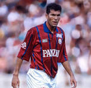
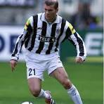
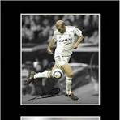
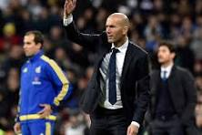

Zinédine Zidane commence sa carrière professionnelle à l'AS Cannes.

Il poursuit sa carrière à Bordeaux et se fait remarquer dans le football français.

Il rejoint le club italien de la Juventus et devient l'un des grands joueurs européens.

Il rejoint le Real Madrid et remporte la Ligue des champions en 2002.

Il devient entraîneur et remporte trois Ligues des champions consécutives.